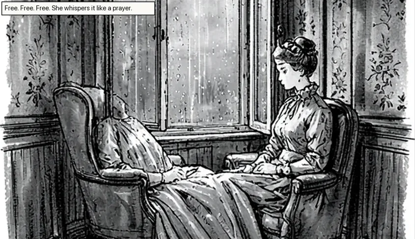
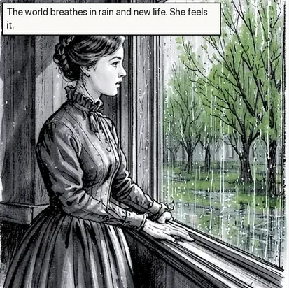
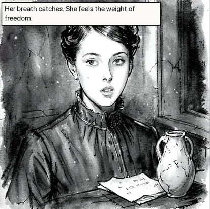
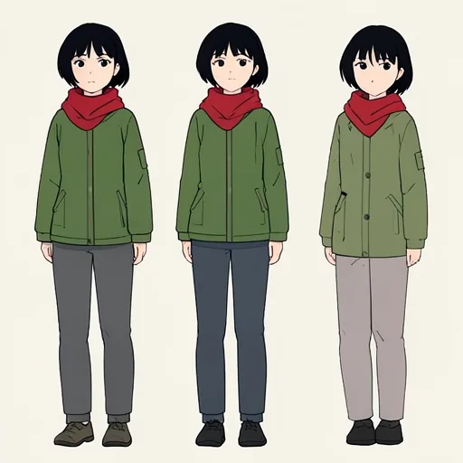
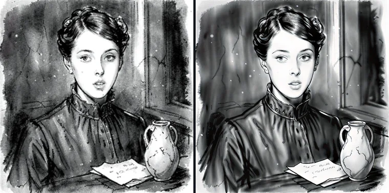

Paste a chapter. Model Studio finds who is in it, draws them the same way on every page, and narrates it in a voice you pick — all with models running on Apple Silicon, offline, encrypted.
Free and open source · Apple Silicon · macOS 13 or later
The Story of an Hour· Kate Chopin

panel 1

panel 2

panel 3
Cast · read from the story3
Louise Mallardlead · 9 mentionsOK

Josephineher sister · speaks 2 lines
RRichardsa friend · no description yet
first sound 3.1 s
Chapter 1 · narratedKokoro · “Heart”
She said it over and over under her breath: “Free, free, free!”
No accountNo uploadNo creditsEncrypted at restWorks offlineOpen sourceBuilt for Apple SiliconNo accountNo uploadNo creditsEncrypted at restWorks offlineOpen sourceBuilt for Apple Silicon
Board · prose to pages
From a pasted chapter to a page you can read.
Four steps, and only one of them asks anything of you. The rest is the story model reading carefully and the image model drawing what it was told.
Read
Knowing that characterMrs. Mallard was afflicted with a heart trouble, great care was taken to break to her as gently as possible the news of her husband’s death.
She went away to placeher room alone. She would have no one follow her. Josephine speaks“Louise, open the door!”
3 people2 places4 spoken lines100% of sentences on a panel
Cast
Louise Mallard
The lead: she is in 9 of 12 panels.
AppearanceYoung, dark hair pinned up, slight build
Costume this chapterHigh-necked grey day dress
Approve cast
APPROVED
Draw
Page 1 of 4 — drawn first
Fix
“Make the jug a teacup. Leave her alone.”
Only this panel changesABC
01
Paste the chapter. Pick a length.
Choose how many pages you want and a style. The story model reads who is in each scene, who says every line, and where it happens — and every name is checked against your own words, so nobody is invented. Coverage is real: a sentence that didn’t make it onto a panel is listed, not hidden.
02
Approve the cast — the only question it asks.
Every recurring character gets a full-length reference, costume included, before a single panel is drawn. Change a description, redraw one person, pick the lead. Then approve, and those references hold every face for the rest of the book.
03
Page one arrives first.
You see a finished, lettered page within minutes instead of after the whole chapter. The rest draws page by page while you read. Balloons point at whoever is speaking, and each panel is drawn in the shape of the cell it sits in.
04
Fix the panel, not the page.
Click a panel for a few variants and keep the best, or paint over the part that is wrong and say what it should be. Editing the words in a balloon never redraws the picture.
The Story of an HourKate Chopin · read by Kokoro “Heart”
0:00 / 0:28
This is the real output, unedited.Rendered on an M4 Mac in 11 s for 28 s of speech.
Audiobook
Paste it. Press Listen. Hear it in seconds.
No setup screen and no waiting for the whole chapter. Each sentence is read as soon as it is ready, and the next one is already being read behind it.
First sound in about three secondsMeasured from a cold start with the fast local voice. Under a second once it is warm.
Redo one sentence, not the chapterClick any line to jump there. Re-read it, fix a word or give it another voice, and it is spliced back in.
One storyteller, or a voice for everyoneStart with one narrator. Cast character voices later, from the same people the Board found.
Riyayaar tum kahan ho? 😅
Amanbas 5 min, traffic bahut hai
read as “Riya. यार तुम कहाँ हो?” — names, a breath, “five minutes”, no emoji
Prompt help
Say it your way. Keep every detail you meant.
Prompt help rewrites for the model you picked, and it checks the result: the counts, colours, positions and any words in quotes you asked for must all still be there, or it tells you which one went missing.
E
EnhanceTurns a line into a full scene: setting, light, camera. No style you didn’t imply.
T
TightenFixes clarity and spelling and adds nothing. A clear prompt is left alone.
S
StyleThe same picture in three different looks, side by side, so you can choose.
Outputs on the right are real, from Qwen3.5 9B running on an M4, with nothing edited.
You wrote
Mira gives Jonas a brass key. Mira wears red; Jonas wears blue.
Enriched · for FLUX.2
Mira in redJonas in bluebrass keyMira gives, Jonas receives
Highlighted words were added. Toggle each one in the app.
The rest of the studio
Make a picture. Then keep working on it.
The comic and the audiobook are built from the same tools you can use on their own: generate, edit with a reference, upscale and animate.
Generate
Words to picture, with a live preview as it forms. wet neon street, green jacket
Edit with a reference
Instruction edits, painted masks, outpainting — and keeping a person the same while the scene changes. same woman, wet street at night

Upscale
SeedVR2 restoration. Too big for one pass? It works in overlapping tiles instead of running out of memory.
Video
Text to video, or set a still picture in motion, at 640×368 and up.
Private by design, not by policy
Your unpublished work never meets a server.
An unreleased script, a client brief under NDA, a diary. The models run on the Mac in front of you, and everything they make is sealed with ChaCha20-Poly1305 before it touches the disk.
No accountOpen the app and start.
No telemetryWhat you make is not analytics.
No creditsYour hardware does the work.
Encrypted libraryPictures, audio and drafts, all sealed.
Fits your Mac
It knows what your Mac can run before you download anything.
Model Studio checks the memory you actually have and sorts the catalogue into what fits, what needs low-memory mode, and what it simply won’t offer.
This MacApple M4 · 16 GB unified memory
FLUX.2 Klein 4BPictures and edits · recommended
Fast
Qwen3.5 9B story analystReads the cast, the lines and the scenes · 5.6 GB
Fits
Kokoro voicesAudiobook narration · English and Hindi
Fits
SeedVR2 3BUpscaling, in tiles when needed
Fits
Qwen Image Edit 8-bitNeeds more memory than this Mac has
Not offered
3.1 sto the first spoken word, from a cold start
28 sof narration rendered in 11 seconds
0 bytessent anywhere while it works
16 GBthe Mac it is built and measured on
Measured on an Apple M4 with 16 GB. Every timing in the project is published in docs/measurements.md.
Your next chapter can stay yours.
Free, open source, and fully offline once the models are on your Mac.